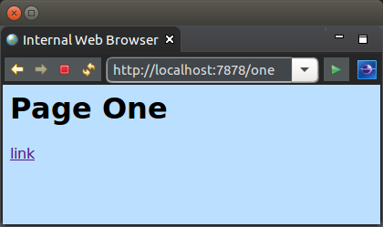
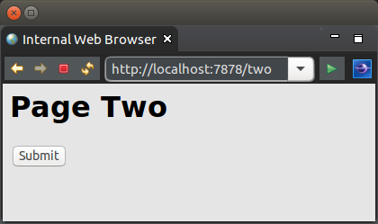
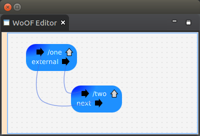

This tutorial demonstrates configuring flows within a WoOF application.
Flows are means to compose/link the execution of one method to another method. They are the continuations in Continuation Injection of Inversion of Coupling Control. We, however, find the term flow easier to understand (plus it's less typing).
The flow is represented as connections in the application.woof. By having the graphical configuration, it makes
Just as a note: while much of the web is now dominated by rich front-ends calling to back-end service APIs, we will focus on dynamic web pages. This allows you something tangible to try out in browsers (rather than constructing REST calls). Plus, the use of flows between REST and dynamic web pages is similar. See the other tutorials regarding building richer applications.
Therefore, to simplify demonstrating flows, the following two web pages are used in this tutorial:
The following shows the configuration of the two web page templates and the navigation between the templates.
The links are the navigation paths between the templates. Each template provides outputs that by the above configuration navigates the user to the other page.
The first template provides a link to navigate to the other template.
<html>
<head>
<title>One</title>
<link rel="stylesheet" type="text/css" href="./css/one.css" />
</head>
<body>
<h1>Page One</h1>
<a href="#{navigate}">link</a>
</body>
</html>
The link is handled by the following method. This is because the method name matches the link name in the template.
The annotation indicates the next function within the flow.
public class TemplateOne {
@Next("external")
public void navigate() {
}
}
As the next function name is not a name of another method (and not a template section name) it becomes an output from the template. From the configuration above the output is configured to navigate to the other template.
This is useful should some action be required to be taken when the user clicks to navigate to the next page.
The second template uses a submit to navigate to the first template.
<html>
<head>
<title>Two</title>
<link rel="stylesheet" type="text/css" href="./css/two.css" />
</head>
<body>
<h1>Page Two</h1>
<form action="#{process}">
<input type="submit" />
</form>
</body>
</html>
Much like the first template the logic class also navigates to an external flow. In this case it uses an interface for programmatic control of navigation.
public class TemplateTwo {
@FlowInterface
public interface Flows {
void next();
}
public void process(Flows flows) {
flows.next();
}
}
As the interface is dependency injected, WoOF sees the @FlowInterface annotation and will provide an implementation of the interface. Each method on the interface will be linked by name to one of the following:
This allows programmatically determining which is the next function. It is possible to add further methods to the interface to provide alternate navigation paths. Navigation only occurs if the method is invoked. Please also be aware that navigation to the page happens after the current method has completed.
Both @Next and @FlowInterface may also be used in combination. @Next will provide the default next unless overridden by a method of a @FlowInterface being invoked.
The above configuration has the external flow linked back to the first template.
The unit test navigates between the templates.
@ExtendWith(OfficeFloorExtension.class)
public class NavigateHttpServerTest {
@RegisterExtension
public final HttpClientExtension client = new HttpClientExtension();
@Test
public void testNavigate() throws Exception {
// Request template one
HttpResponse response = this.client.execute(new HttpGet(this.client.url("/one")));
assertEquals(200, response.getStatusLine().getStatusCode(), "First page should be successful");
assertTrue(EntityUtils.toString(response.getEntity()).contains("Page One"), "Should obtain first page");
// Click on link on template one
response = this.client.execute(new HttpGet(this.client.url("/one+navigate")));
assertEquals(200, response.getStatusLine().getStatusCode(), "Second page should be successful");
assertTrue(EntityUtils.toString(response.getEntity()).contains("Page Two"), "Should navigate to second page");
// Submit on template two
response = this.client.execute(new HttpGet(this.client.url("/two+process")));
assertEquals(200, response.getStatusLine().getStatusCode(), "Submit should be successful");
assertTrue(EntityUtils.toString(response.getEntity()).contains("Page One"), "Should submit template two");
}
}
JUnit 4 example:
public class NavigateHttpServerJUnit4Test {
@Rule
public final OfficeFloorRule officeFloor = new OfficeFloorRule(this);
@Rule
public final HttpClientRule client = new HttpClientRule();
@Test
public void testNavigate() throws Exception {
// Request template one
HttpResponse response = this.client.execute(new HttpGet(this.client.url("/one")));
assertEquals("First page should be successful", 200, response.getStatusLine().getStatusCode());
assertTrue("Should obtain first page", EntityUtils.toString(response.getEntity()).contains("Page One"));
// Click on link on template one
response = this.client.execute(new HttpGet(this.client.url("/one+navigate")));
assertEquals("Second page should be successful", 200, response.getStatusLine().getStatusCode());
assertTrue("Should navigate to second page", EntityUtils.toString(response.getEntity()).contains("Page Two"));
// Submit on template two
response = this.client.execute(new HttpGet(this.client.url("/two+process")));
assertEquals("Submit should be successful", 200, response.getStatusLine().getStatusCode());
assertTrue("Should submit template two", EntityUtils.toString(response.getEntity()).contains("Page One"));
}
}
The next tutorial looks at exception handling.